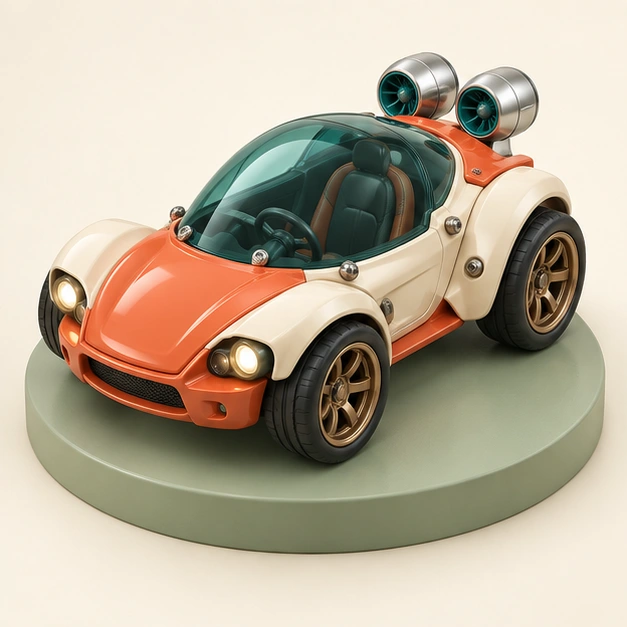

迷你车库MINI GARAGE
BUILD A LITTLE ADVENTURE
把主意，装上车。
先看赛道，再配零件。你的设计和驾驶，一起决定这一圈。

P01 · 探索者公路胎 × 加速喷口换上零件，去试一圈
选赛道、配零件，开出自己的路线 · 游戏成绩仅在本页展示
01 / 选择赛道
02 / 装上你的主意
选择轮胎选择装置正在准备本地美术素材…
自动前进；拖动赛道转向，或按住底部左右键。另一只手可同时使用装置。前 3 秒热身，随后逐渐提速；每局约一分钟。
本页试跑记录
| 赛道 | 搭配 | 用时 | 碰障 |
|---|
关闭页面后清空。
硬地直道0.0 秒0 km/h
拖动赛道或按住左右转向 · 底部按钮使用装置
你的设计跑起来了！
再玩可重新选赛道、配零件；嵌入模式需等待宿主重新确认开局。